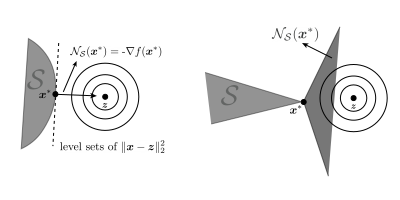

Constrained Optimization¶
Let f:\R^n \rightarrow \R be a differentiable function and \setS be a convex set. In this lecture, we will look at first-order necessary conditions of the minimization program
In the case where \setS = \R^n, the first order necessary condition for \vx^* to be a minimizer is \nabla f(\vx^*) = 0. More generally, for arbitrary convex set \setS,
We can express the above optimality condition in terms of normal cones as well. The normal cone of a set \setS at a point \vx is defined as
The first order necessary condition in terms of normal cone is:
Figure below shows the normal cone of a set \setS at different points in the set.
Examples¶
Example 1 (Normal cone of set \setS at an interior point) We say that \vx \in \R^n is in the interior of a set \setS (denoted \text{int}\setS ) if there exist \epsilon >0 such that $\vx+\epsilon \vv \in \setS$ for all \vv \in \R^n.
To see this, note that a vector \vg in \setN_\setS(\vx) makes a non-positive inner product with every displacement from \vx that is contained in \setS. However, since \vx is in the interior, a valid displacement is \epsilon \vg for some \epsilon >0.
Example 2 (Normal cone of affine set) Consider an affine set \setS = \{\vx | \mA\vx=\vb\}. By definition of normal cone, we have
In the above definition, note that both \vu and \vx are in the set \setS. Thus, \vu -\vv \in \vnull(\mA). So,
Note that if \vu \in \vnull(\mA) and \vg\trans\vu<0, then -\vu \in \vnull(\mA) and \vg\trans(-\vu)>0. Therefore, it must be that
Example 3 (Normal cone to affine half-space) Consider the set \setS = \{\vx\ |\ \mA\vx\leq\vb \ \}. Fix \vx \in \setS. Then, we can separate inequalities that are active vs those that are not. Let \setB be the index set such that \va_i\trans\vx = b_i for all i\in\setB. Similarly, let \setN be the index set such that \va_i\trans\vx < b_i for all i\in\setN. The normal cone of \setS at a point \vx is
Use examples 1 and 2 to show this.
Projected gradient method¶
The goal in this section is to describe a gradient descent based method to solve constrained optimization programs of the form \eqref{constrained_prob}. The gradient descent iterate at a point \tilde{\vx}_k is \vx_{k+1} = \vx - \alpha \nabla f(\vx_k). However, the iterate \tilde{\vx}_{k+1} may not belong in the constraint set \setS. In projected gradient descent, we simply choose the point in the set closest to \tilde{x}_{k+1} as the next iterate \vx_{k+1} of the descent algorithm, i.e.
In the above program, \vx_{k+1} is called the projection of \tilde{\vx}_{k+1} on the set \setS and is denoted by \text{proj}_\setS(\tilde{\vx}_{k+1}). For any set \setS \in \R^n, the projection \text{proj}_\setS(\cdot) is a function from \R^n→ \R^n such that
The projected gradient descent algorithm with constant stepsize is:
Projected gradient descent_ Input: initialization \vx_0 and step size \alpha For k = 0,1,2,\dots
-
compute descent direction \nabla f(\vx_k)
-
compute \tilde{\vx}_{k+1} = \vx_k -\alpha \nabla f(\vx_k)
-
Project \tilde{\vx}_{k+1} onto \setS and set \vx_{k+1} = \text{proj}_\setS(\tilde{\vx}_{k+1})
-
check stoping criteria
Some useful properties¶
-
Geometry of Projection: The first order necessary optimality condition for \vx^* to be the minimizer of \|\vx - \vz\|_2^2 subject to \vx in a convex set \setS is -\nabla f(\vx^*) \in \setN_\setS(\vx^*) (or equivalently ∇ f(\vx^*)\trans(\vz - \vx^*) \geq 0 for all \vz \in \setS). For projection, these are sufficient conditions as well. So,
\vx^* = \text{proj}_\setS(\vz) ⇔ -(\vx^* - \vz) \in \setN_\setS(\vx^*) -
Fixed point interpretation of Projected Gradient Descent Let \vx^* = \argmin_{\vx \in \setS} f(\vx) and \alpha >0. Then \vx^* is a fixed point of p(\vx) = \text{proj}_\setS(\vx - \alpha \nabla f(\vx)), i.e. \vx^* =\text{proj}_\setS(\vx^* - \alpha \nabla f(\vx^*)).
Proof: From optimality condition, we have
\begin{align*} & \nabla f(\vx^*)\trans(\vz-\vx^*) \geq 0 \text{ for all } \vz \in \setS\\ \Leftrightarrow &(\alpha \nabla f(\vx^*)\trans(\vz-\vx^*) \geq 0 \text{ for all } \vz \in \setS,\ \alpha\geq 0\\ ⇔ &(\vx^* - (\vx^* -\alpha \nabla f(\vx^*)\trans(\vz-\vx^*)) \geq 0 \text{ for all } \vz \in \setS,\ \alpha\geq 0\\ \end{align*}Let \vy = \vx^* -\alpha \nabla f(\vx^*). Thus, we get
(\vx^* - \vy)\trans(\vz-\vx^*) \geq 0 \text{ for all } \vz \in \setS.Note that this is the optimality condition for \vx^* to be the projection of \vy onto the set \setS. Thus, \vx^* =\text{proj}_\setS(\vx^* - \alpha \nabla f(\vx^*)).
-
Contractive property The projection onto a convex set \setS is contractive. That is, for any \vz, \vy \in \R^n, we have \|\text{proj}_\setS(\vz) - \text{proj}_\setS(\vy)\|_2 \leq \|\vz - \vy\|_2.
Examples¶
Example 1 (Euclidean ball) Let \setS = \{\vx | \|\vx\|_2\leq 1\} and let \vx = \text{proj}_\setS(\vz). Then
Example 2 (Inf. norm ball) Let \setS = \{\vx | \|\vx\|_∞\leq 1\} and let \vx = \text{proj}_\setS(\vz). Then x_i = \text{sign}(z_i)\min\{1,|z_i|\}.